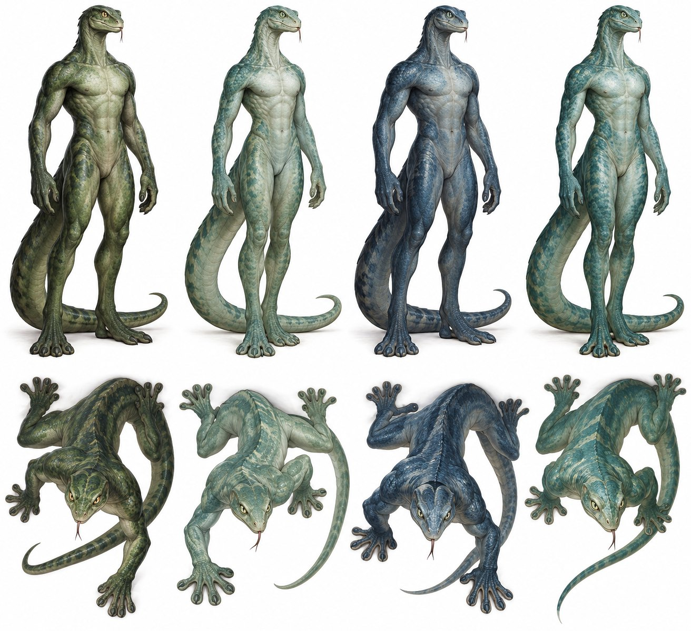
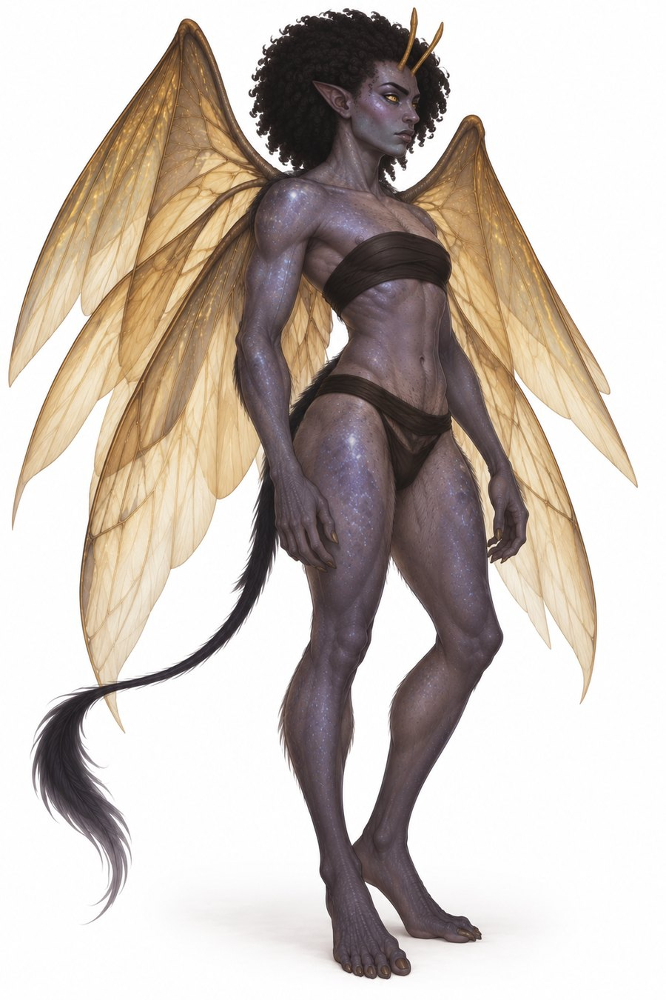
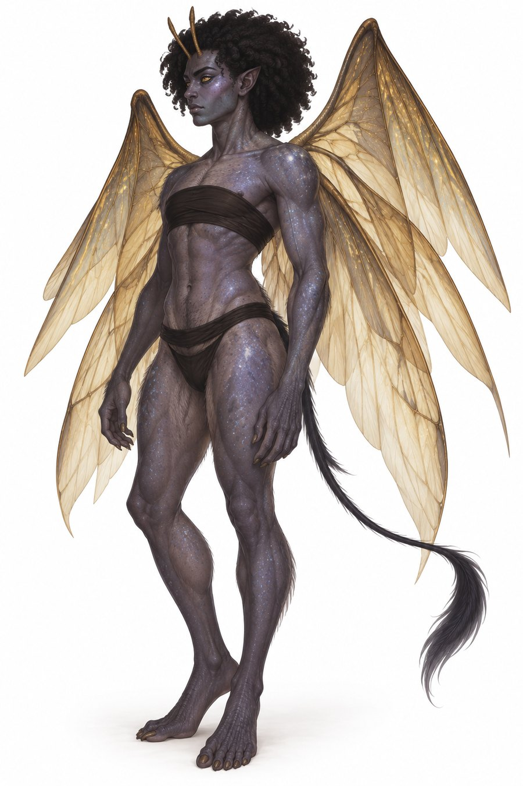
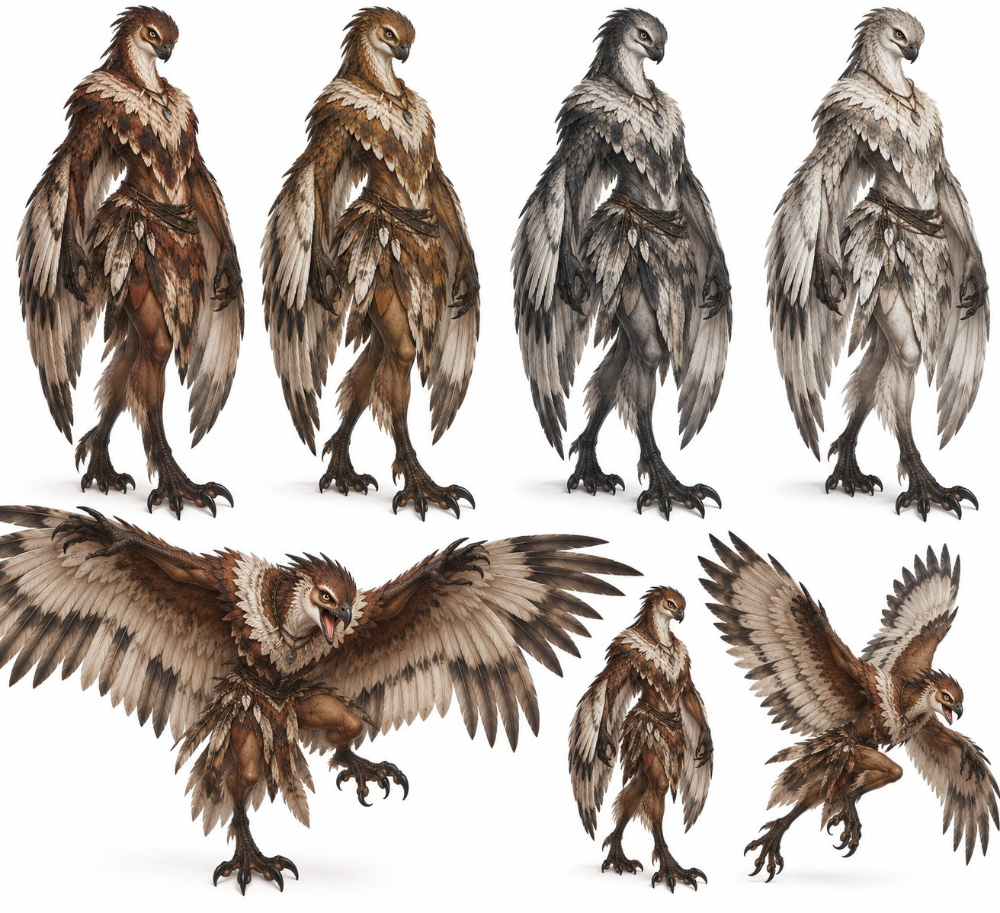
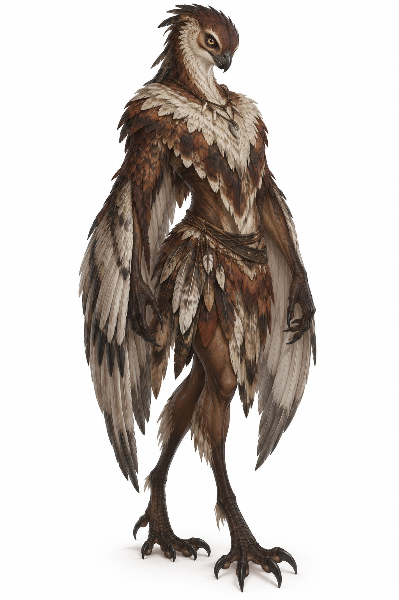

The four broods
Four peoples born in the early years of Ishphaeno and the war. Only one of them is the Lamiae.
Lines without a tag are settled canon from the Lamiae reference (v3). Tags mark anything less settled.
In the early years of Ishphaeno, during the war, four women carried trial pregnancies in an attempt to make better creations than humans. Each gave birth to a different people. These are distinct peoples, not four kinds of Lamiae. Veskari, Shavari and Kharuvi are their Vatraxu names. Lamike, for the Lamiae, is their name in both Vatrahu and Vatraxu. Decided All four hunted on Earth at first. Most then withdrew into Ishphaeno and spread to the places that suited their bodies, not always staying near their mothers. Decided
| Brood | Original number | Mother | Today |
|---|---|---|---|
| Lamiae | 8 | Hashaeqa | See the Lamiae pages. |
| Veskari | 4, quadruplets | Zaelith or Pholaeth Open | Their numbers have fallen and the decline is certain. |
| Shavari | 2, a sister and a brother | Naevoshi, her first children | They were unable to have children. Decided |
| Kharuvi | 3, two female and one male | Zaelith or Pholaeth Open | Low numbers, a gentle decline or plateau rather than a steep fall. Decided |
That makes 17 original children in all. The Shavari are the only brood unable to reproduce. Decided
Veskari

Serpentine and omnivorous. They have long bodies, flexible spines, powerful joints and limbs, and skulls a little wider and longer than a human’s. Their hands and feet are broad and strong, with gripping pads that let them climb sideways and upside down. A crocodile-like tail grows from the tailbone.
- Skin
- Tough and a little scaly, in steel blue, sea green, seafoam and swamp green.
- Eyes
- Pale amber to silver-green irises with vertical pupils.
- Tongue
- Exceptionally long and versatile. It can reach their own eyes.
- Build
- Males are generally larger and more imposing.
- Habitat
- Sensitive to light, so caves and underground waterways suit them.
- Hunting
- They ambush from ceilings, and can submerge to stalk, seize and drown prey. They are not truly aquatic.
Shavari


No one has knowingly met a Shavari in a very long time, and what is told of them is told in the past tense and with “said to.” Their natural forms were said to differ between the sexes, though both twins were mostly androgynous. The sister was said to lean masculine and the brother feminine. Vatraxu personal names are usually gender-neutral, though some pick up gendered associations in time.
- Skin
- Said to have been ashen purple with pale blue and white star-like flecks.
- Eyes
- Silver sclera, gold irises and black segmented pupils like a gecko’s, with several pinholes.
- Features
- Nubian features, a large black 4A afro and slightly sharpened ears.
- Horns
- Short, straight and upright, like antennae, above the forehead and brows.
- Wings and tail
- Golden gossamer wings and a thin, wispy black tail that was very expressive.
- Body
- Fine cat-like fuzz across the midriff and hips, calloused hands and feet with strong nails, full chests and sculpted hips within a graceful frame.
Flight. Legends say the Shavari could fly faster than sound, and could make themselves silent whenever they wished. Those who claimed to have seen one in the sky said they heard nothing until it was gone. Decided
Masquerade. A Shavari body was said to flow between forms. They could imitate another body’s look and proportions without gaining its powers, and they would often default to copying each other. They were said to talk without words, through shifts of features, posture, expression and colour. This was not telepathy. Decided
Borrowed power. Eating another species was said to give a weaker, temporary copy of that being’s inborn supernatural abilities. How strong it was and how long it lasted depended on the one eaten. The store faded with both time and use, with no fixed timer. They remembered an appearance after the borrowed power ran out. They needed human flesh and were choosy eaters. Decided
The twin bond. Distance was said to dull their power only a little, but apart, deliberate shifting was harder, and one twin could stay stuck in a form far longer than was natural. Hurting one troubled the other and might upset the shape or stability of either, even side by side. They were trained in restraint, discretion, a steady public identity and guarding each other. They fought with honour in the Krang Uthjook. Decided
Kharuvi


Smaller, slighter, light-boned fliers that eat carrion. Wing surfaces are joined to the arms and unfold like an accordion, as pleated membranes mixed with feather-like structures. The arms help in flapping, and the legs fold to cut drag.
- Face
- Stubbier, with sharper mouths and small pointed teeth.
- Hands and feet
- Strong grasping, tearing toes and claws, which they sharpen like a cat.
- Skin
- Mahogany to ash-white, for camouflage.
- Eyes
- Yellowish sclera, brown to nearly black irises and round pupils.
- Build
- Females are generally larger and more aggressive.
- Attack
- They strike in flight or step forward, cock the head to one side and let out an incapacitating screech.
- Weakness
- Sensitive to heat.
The East gate sign over Haelvatael, the Two Brothers, first stood for the Shavari. As the memory of who the pair were faded, the name shifted to the Two Brothers. Decided
Open questions
- Which of Zaelith and Pholaeth bore the Veskari and which the Kharuvi Open
- Any reproductive or population detail beyond what is stated here Open
- The meanings of the names Veskari, Shavari and Kharuvi, which are chosen but have no etymologies yet Open